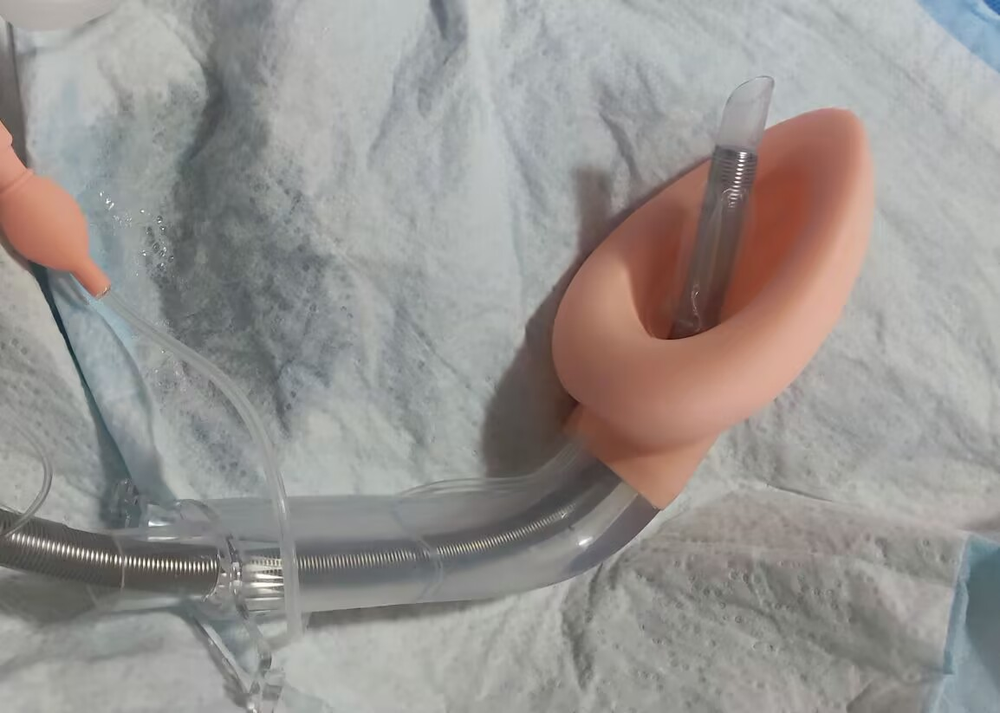
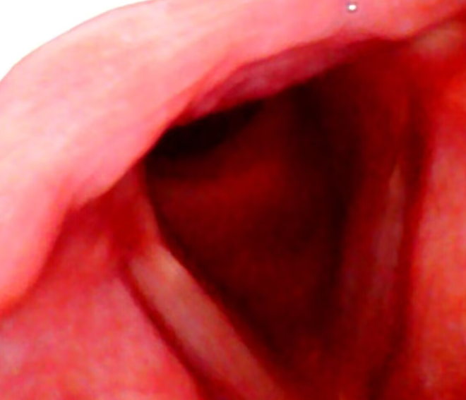

坏猫
@WorstCat
@XINSHu233 这种引导用的喉罩怎么比免充气的还粗Σ( ° △ °|||)︴
必须要用加强的管还是普通的管就行


心树
@XINSHu233
终于学会如何使用气插了！ 适应之后异物感其实比喉罩要小 呼吸会变成超级通畅 而且插好之后完全说不了话 最多只能发出呲呲的气流声了 但是需要一直集中注意力去忽视自己肺里插了根管子的事实 不然还是容易呛咳 （很危险别尝试） https://t.co/gQ9cgMIUQC